Activity: Using the hem command in sheet metal design
Click here to download the activity files.
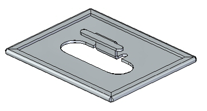
Objectives
This activity demonstrates how to create a hem on the edge of a sheet metal part. In this activity you will:
-
Create a simple hem on a single edge of a sheet metal part.
-
Vary the options for creating hems.
-
Control the extent and end treatments of hems placed along adjacent thickness faces.
Start Solid Edge 2023.
Open → hem_activity_1.psm.
On the File menu, click Save As → Save As.
On the Save As dialog box, in the File box, save the part to a new name or location so that other users can complete this activity.
Click the Hem command .
Click the Hem Options button .
Set the Hem Type to be Closed and Flange Length 1 to be 15.00 mm.
Select the edge shown.
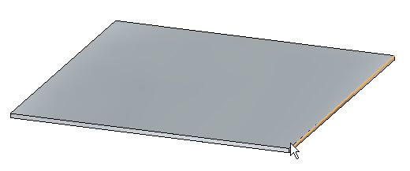
Right-click to complete the hem shown.
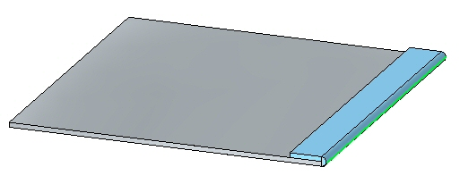
Click the Select tool and then click the hem feature in PathFinder. Click the edit handle to change the settings on the hem.
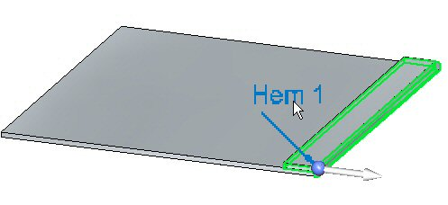
Click the Hem Options button and set the Type to Open. Set Bend Radius 1 to 1.50 mm. Set Flange Length 1 to 6.00 mm and then click OK. The hem is modified as shown.
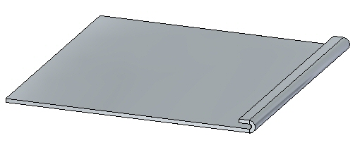
Click the Hem Options button and set the Type to S-Flange. Keep the default values for bend radii and flange lengths, then click OK. The hem is modified as shown.
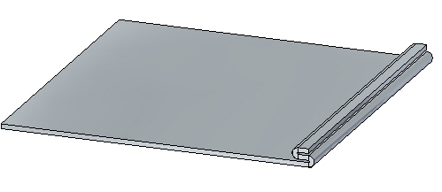
Click the Hem Options button and set the Type to Curl. Set Flange Length 1 to 11.25 mm and keep the existing values for the remaining lengths and radii, then click OK. The hem is modified as shown.
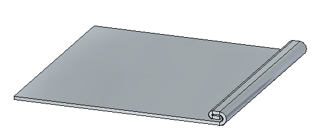
Click the Hem Options button and set the Type to Closed Loop. Keep the default values for bend radii and flange lengths, then click OK. The hem is modified as shown.
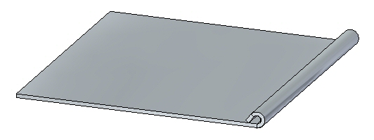
Close the file without saving.
Open hem_activity_2.psm.
Click the Hem command .
Click the Hem Options button .
Set Hem Type to S-Flange.
Check the Miter Hem option and ensure the Miter Angle is 45o.
Select the edge shown.
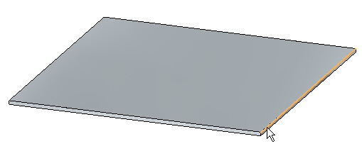
Select the edge set shown.
Since the selection type is set to chain, the edge set is defined by the perimeter of the part. If a single edge is desired, the selection type can be set to single rather than chain.
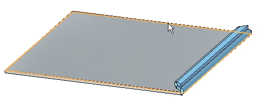
Right-click to accept the hem.
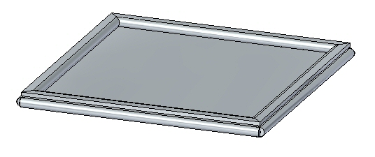
Shown below is a flat pattern of the sheet metal part is shown below.
Flat pattern creation is covered in another activity. This is for information purposes only.
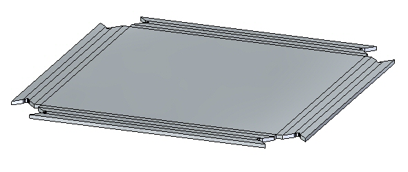
In this activity you created a variety of hems in sheet metal parts. You learned how to set the parameters to create the hems, and how to edit the values when needed.
-
Click the Close button in the upper- right corner of this activity window.
Answer the following questions:
-
Using hem options, define the three types of hems that can be created.
-
What is the difference between using a positive value versus a negative value in defining a hem mitre?
-
When creating a sheet metal hem feature, list at least three options needed to create the hem.